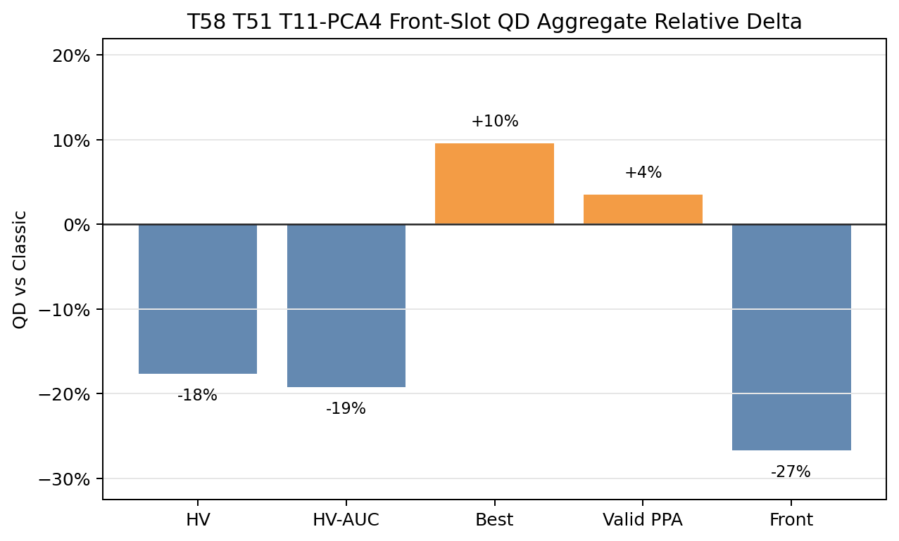
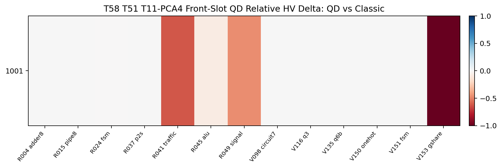
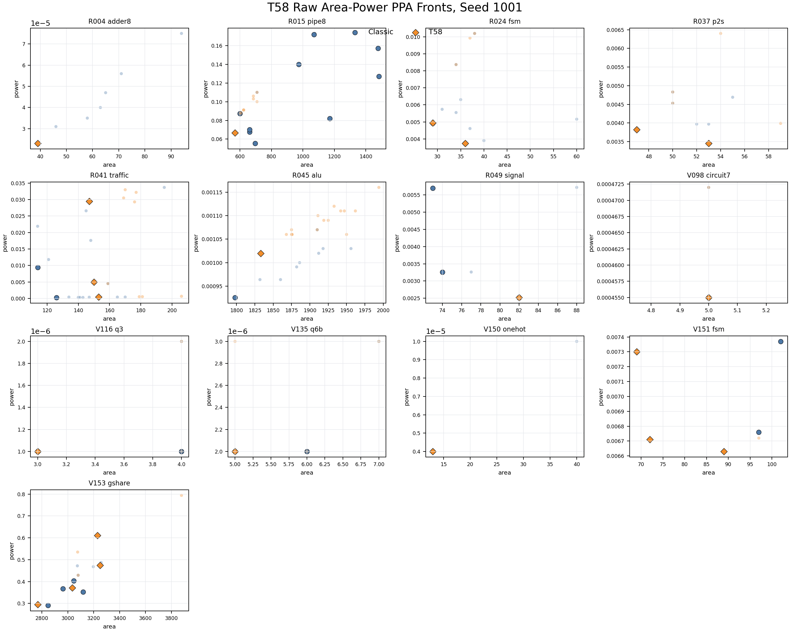
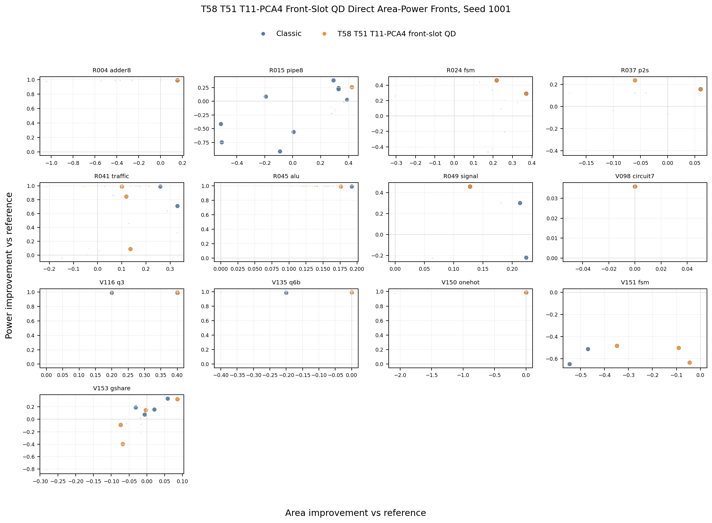
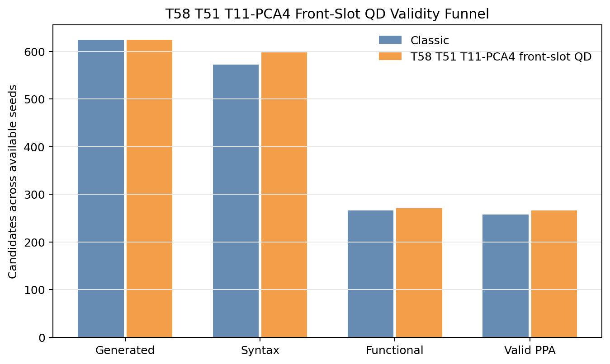
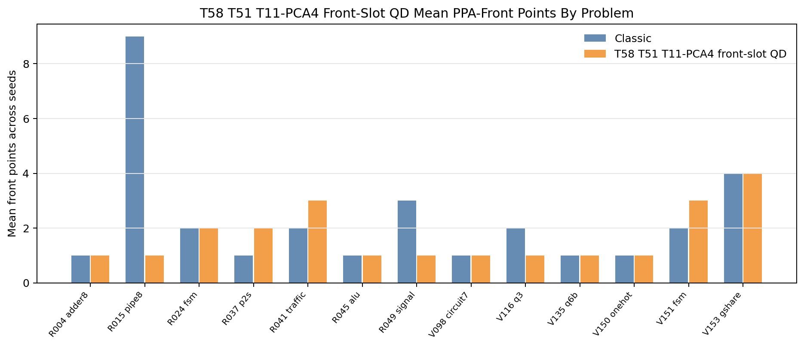
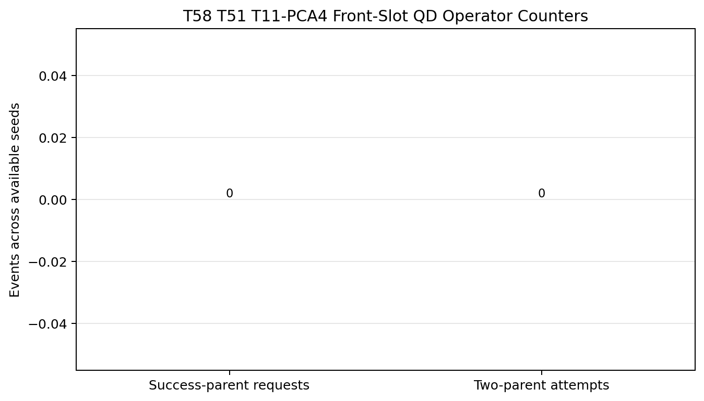

T58 Direct PPA Pareto Supplement
Static reader-facing figures for the completed 13-problem hard/tuning screen. T58 keeps the T51 code-individual/front-slot emitter and replaces the archive descriptor with the frozen T11 graph PCA4 projection. The result improves valid PPA yield and best-score pressure, but it loses the PPA-front metrics that matter most for the QD claim.
-0.016348Mean HV delta
-0.015787Mean HV-AUC delta
+0.021823Best-score delta
+9Valid PPA
-8Front points
-16Unique PPA points
-12Reference beating
70Archive members
Aggregate Direction

Paired HV Heatmap

Raw Area-Power Fronts

Improvement-Vs-Reference Fronts

Validity, Front Coverage, And Operator Counters


